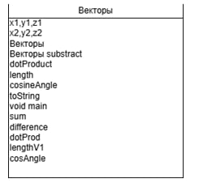
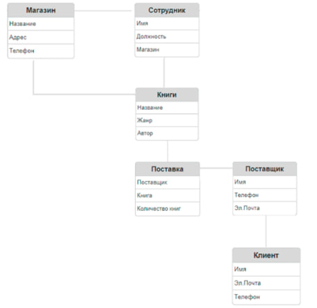

Введение
Введение Это отчет содержит результаты учебной практики по программированию, в которую входят 5 дисциплин с программированием: Разработка программных модулей, разработка мобильных приложений, поддержка и тестирование программных модулей, системное программирование, программирование 1С.
Задания
- Задания по программированию
- Создать АИС
- Создать мобильное приложение
- Создать сайт
Неделя 1
1.1 Задача 1. Найти корни квадратного уравнения. Параметры уравнения передавать с командной строкой.
Рисунок 1. Блок схема.
Рисунок 2. Скриншот результата.
Рисунок 3. Таблица идентификаторов.
1.2 Задача 2 Создать классы, спецификации которых приведены ниже. Определить конструкторы и методы setТип(), getТип(), toString(). Определить дополнительно ОСНОВЫ JAVA 88 методы в классе, создающем массив объектов. Задать критерий выбора данных и вывести эти данные на консоль. В каждом классе, обладающем информацией, должно быть объявлено несколько конструкторов.
Рисунок 4. Диаграмма классов.
Рисунок 5. Скриншот результата.
Рисунок 6 Таблица идентификаторов.
1.3 Задача 3 Создать объект класса Наседка, используя классы Птица, Кукушка. Методы: летать, петь, нести яйца, высиживать птенцов .
Рисунок 7 Диаграмма классов.
Рисунок 8 Скриншот результата.
Рисунок 9 Таблица идентификаторов.
1.4 Задача 4 Создать класс Художественная Выставка с внутренним классом, с помощью объектов которого можно хранить информацию о картинах, авторах и времени проведения выставок .
Рисунок 10 Диаграмма классов.
Рисунок 11 Скриншот результата.
Рисунок 12 Таблица идентификаторов.
1.5 Задача 5 Найти, каких букв, гласных или согласных, больше в каждом предложении текста .
Рисунок 13 Диаграмма классов.
Рисунок 14 Скриншот результата.

Рисунок 15 Таблица идентификаторов.
1.6 Задача 6 Выполнить задания на основе задачи № 3, контролируя состояние потоков ввода/вывода. При возникновении ошибок, связанных с корректностью выполнения математических операций, генерировать и обрабатывать исключительные ситуации. Предусмотреть обработку исключений, возникающих при нехватке памяти, отсутствии требуемой записи (объекта) в файле, недопустимом значении поля и т. д .
Рисунок 16 Диаграмма классов.
Рисунок 17 Скриншот результата.
Рисунок 18 Таблица идентификаторов.
1.7 Задача 7 В правильной четырехугольной пирамиде провести сечение, проходящее через одну из сторон основания и середину ее высоты .
Рисунок 19 Диаграмма классов.
Рисунок 20 Скриншот результата.
Рисунок 21 Таблица идентификаторов.
1.8 Задача 8 Составить программу получения на экране рисунков .
Рисунок 22 Диаграмма классов.
Рисунок 23 Скриншот результата.
Рисунок 24 Таблица идентификаторов.
1.9 Задача 9 Составить описание класса для объектов-векторов, задаваемых координатами их концов в трехмерном пространстве. Обеспечить при этом выполнение операций сложения и вычитания векторов с получением нового вектора (суммы или разности), вычисление скалярного произведения двух векторов, длины вектора и косинуса угла между векторами .
Рисунок 25 Диаграмма классов.
Рисунок 24 Скриншот результата.
Рисунок 25 Таблица идентификаторов.
1.10 Задача 10 Математико .
Рисунок 26 Диаграмма классов.
Рисунок 27 Скриншот результата.
Рисунок 28 Таблица идентификаторов.
Неделя 2
Разработка АИС.
Основное задание – разработка АИС в соответствии с номером варианта каждый студент анализирует предметную область, проектирует и выполняет компьютерную реализацию автоматизированной информационной системы для заданной предметной области.
Вариант 11: сеть книжных магазинов.
Рисунок 29 ER-Диаграмма.
Рисунок 30 Реализация аис на java.
Рисунок 31 Реализация аис на 1c.
Неделя 3
Разработка мобильного приложения.

Рисунок 32 Первая активность.

Рисунок 33 Вторая активность с таблицой магазины.
Заключение
Учебная практика по программированию предоставила возможность углубить знания и навыки в различных областях программирования, включая разработку программных модулей, мобильных приложений, поддержку и тестирование программного обеспечения, системное программирование, а также работу с платформой 1С. В ходе практики были выполнены поставленные задачи, достигнуты цели, и усовершенствованы профессиональные компетенции.